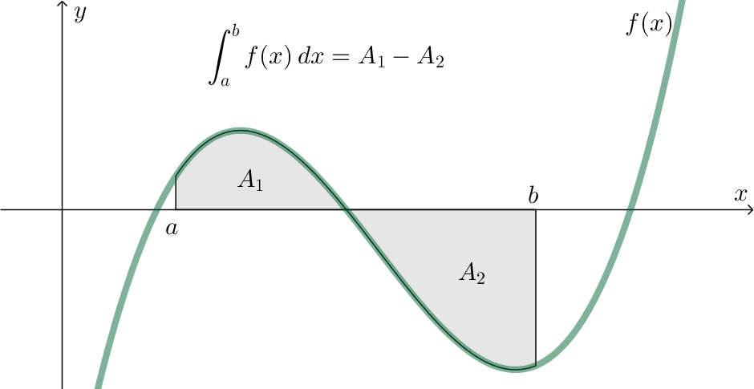
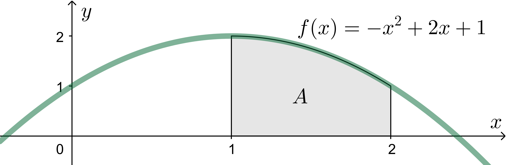
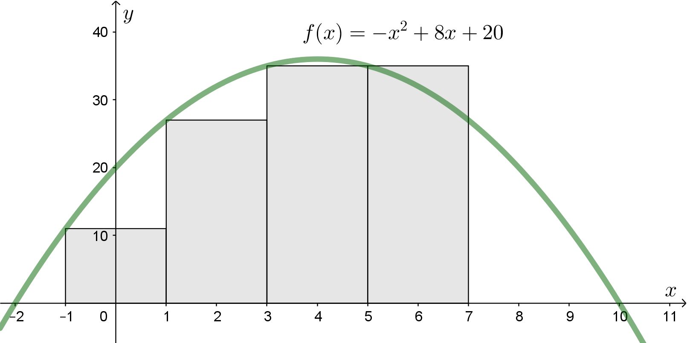
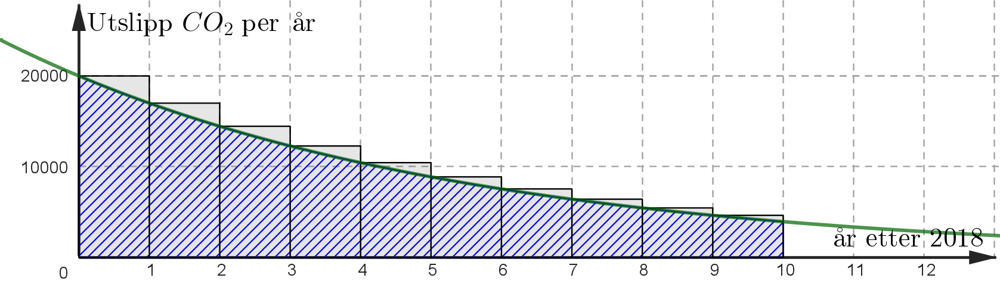
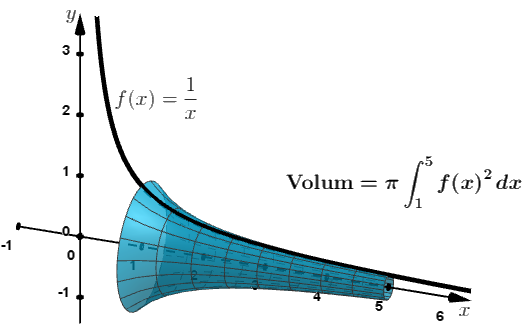

Sammendrag:

Integralet av \(f(x)\) fra \(x=a\) til \(x=b\) er definert slik:
Bestem integralet
\[ \int_1^2 \left(-x^2+2x+1\right)\,dx \]
\[ \int_1^2 \left(-x^2+2x+1\right)\,dx \approx A_{\text{trapes}} = \frac{f(1)+f(2)}{2}\cdot 1 = \frac{2+1}{2}\cdot 1 = \frac{3}{2} = 1\text{,}5 \]For å bestemme integraler numerisk er det vanlig å dele opp arealet mellom grafen og \(x\)-aksen i rektangler:

\[ \begin{aligned} \int_{-1}^{7} f(x)\,dx \approx \sum f(x)\,\Delta x &= f(-1)\cdot 2 + f(1)\cdot 2 + f(3)\cdot 2 + f(5)\cdot 2 \\ &= \left(11+27+35+35\right)\cdot 2 = 108 \end{aligned} \]Ved å bruke programmering kan vi enkelt dele opp arealet i smalere rektangler, og dermed enkelt finne en bedre tilnærming til integralet:
def f(x):
return -x**2 + 8*x + 20 # Funksjonen som skal integrerers
S = 0 # Startverdi for summen (integralet)
x = -1 # Startverdi for x
dx = 0.0001 # Rektangelbredde
while x < 7:
S = S + f(x)*dx # Summen øker med arealet av et raktangel
x = x + dx # x-verdien øker
print(S) # Skriver ut summen (integralet)
Integrasjon brukes i veldig mange praktiske sammenhenger.
I praktiske sammenhengene hvor vi kan bruke rekker, er det ofte mer riktig og/eller enklere å bruke integrasjon.
En bedrift slipper ut 20 000 tonn CO\(_2\) i 2018. De har et mål om å redusere de årlige utslippene med 15 % hvert år fra og med 2019.
Hvor mye slipper de ut i løpet av de ti årene 2018–2027?
Hvis utslippet reduseres 1. januar hvert år, blir utslippet en geometrisk rekke:
\[ 20\,000 + 20\,000\cdot 0\text{,}85 + 20\,000\cdot 0\text{,}85^2 + \cdots + 20\,000\cdot 0\text{,}85^9 = 20\,000 \cdot \frac{0\text{,}85^{10}- 1 }{0\text{,}85 - 1} = 107\,083 \]Hvis utslippet reduseres kontinuerlig, blir totalt utslipp et integragral, som vi f.eks. kan løse med programmering:
\[ \int_0^{10} 20\,000\cdot 0,85^x\,dx = 98\,835 \]Arealet av det skraverte området viser integralet, og arealet av søylene viser summen av rekken:

For bestemte integral gjelder
\[ \int_a^b f(x)\,dx = F(b)-F(a), \quad \text{hvor } F'(x)=f(x) \]og for ubestemte integral gjelder
\[ \int f(x)\,dx = F(x)+C, \quad \text{hvor } F'(x)=f(x) \text{ og } C \text{ er en konstant} \]Når vi integrerer skal vi altså antiderivere. Det er derfor lurt å repetere noen derivasjonsregler.
\[ \begin{aligned} \left( x^n \right)' &= n \cdot x^{n-1} \\ \left( e^u \right)' &= u' \cdot e^u \\ \left( \ln u \right)' &= \frac{1}{u} \cdot u' \\ \left( u \cdot v \right)' &= u' \cdot v + u \cdot v' \end{aligned} \]I tillegg til disse regelen, har vi noen nye regler i R2:
\[ \begin{aligned} (\sin(u))' &= u'\cdot \cos(u) \\ (\cos(u))' &= -u'\cdot \sin(u) \end{aligned} \]Reglene med \(\sin \) og \(\cos \) gjelder når vi bruker radianer som vinkelmål istedenfor grader. Dette blir forklart i kapittelet om trigonometri.
Bestem integralene og gi en praktisk tolkning av det bestemte integralet.
\[ \int \left(-x^2+2x+1\right)\,dx \quad \text{og} \quad \int_1^2 \left(-x^2+2x+1\right)\,dx \]Det ubestemte integralet er
\[ \int \left(-x^2+2x+1\right)\,dx = -\frac{x^3}{3}+x^2+x+C \]Det bestemte integralet er
\[ \begin{aligned} \int_1^2 \left(-x^2+2x+1\right)\,dx &= \left[-\frac{x^3}{3}+x^2+x\right]_1^2 \\ &= \left(-\frac{2^3}{3}+2^2+2\right) - \left(-\frac{1^3}{3}+1^2+1\right) = \frac{10}{3}-\frac{5}{3} = \frac{5}{3} \end{aligned} \]Det bestemte integralet er den eksakte verdien for arealet \(A\) i figuren:
Fra produktregelen i derivasjon får vi
\[ \begin{aligned} u'\cdot v + u\cdot v' &= (u\cdot v)' \\ \int u'\cdot v\,dx + \int u\cdot v'\,dx &= u\cdot v \\ \int u\cdot v'\,dx &= u\cdot v - \int u'\cdot v\,dx \end{aligned} \]Bestem integralet
\[ \int 2x\cdot e^{3x}\,dx \]Bestem integralet
\[ \int 2x\cdot \ln x\,dx \]Her er det lurt å sette \(u=\ln x\) og \(v'=2x\).
\[ \begin{aligned} \int \overbrace{\ln x}^{u}\cdot \overbrace{2x}^{v'}\,dx &= \overbrace{\ln x}^{u}\cdot \overbrace{x^2}^{v} - \int \overbrace{\frac{1}{x}}^{u'}\cdot \overbrace{x^2}^{v}\,dx \\ &= \ln x\cdot x^2 - \int \frac{x}{2}\,dx \\ &= \ln x\cdot x^2 - \frac{x^2}{4} + C \end{aligned} \]Med kjerneregelen i derivasjon ganger vi med den deriverte av kjernen:
\[ f'(x) = g'(u)\cdot u' \]Med variabelbytte i integrasjon deler vi med den deriverte av kjernen:
\[ \int f(x)\,dx = \int \frac{g(u)}{u'} \, du \]For å bestemme \(A\) og \(B\) bruker vi at
\[ \begin{aligned} \frac{2}{(x+2)(x+3)} &= \frac{A}{x+2} + \frac{B}{x+3} \\ 2 &= A(x+3)+B(x+2) \quad \text{(har ganget med fellesnevner)} \\ 2 &= A \quad \text{(har satt inn } x=-2\text{)} \\ 2 &= -B \quad \text{(har satt inn } x=-3\text{)} \end{aligned} \]Integralet er dermed
\[ \int \frac{2}{x^2+5x+6}\,dx = 2\ln(x+2)-2\ln(x+3)+C \]Når arealet mellom \(f\) og \(x\)-aksen roteres \(360^\circ\) rundt \(x\)-aksen i intervallet \(x\in[a,b]\), er volumet av omdreiningslegemet
\[ V = \pi \int_a^b \left(f(x)\right)^2\,dx \]og arealet av overflaten til omdreiningslegemet er
\[ A = 2\pi \int_a^b f(x) \sqrt{\left(f'(x)\right)^2+1}\,dx \]
Volumet av omdreiningslegemet ovenfor er
\[ V = \pi \int_1^5 \frac{1}{x^2}\,dx = \pi\left[-\frac{1}{x}\right]_1^5 = \pi\left(-\frac{1}{5}+\frac{1}{1}\right) = \frac{4\pi}{5} \]Overflatearealet er
\[ A = 2\pi \int_1^5 \frac{1}{x} \sqrt{\frac{1}{x^4}+1}\,dx \approx 10\text{,}82 \]